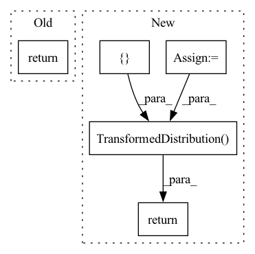

Pattern ID :35000

Before Change
super(ActionDecoder, self).__init__()
def forward(self, x):
return x
class RewardDecoder(nn.Module):
After Change
self.model = nn.Sequential(*self.layers)
def forward(self, x):
raw_init_std = np.log(np.exp(self.init_std) - 1)
x = self.model(x)
mean, std = torch.chunk(x, 2, dim=-1)
mean = self.mean_scale * torch.tanh(mean / self.mean_scale)
std = self.softplus(std + raw_init_std) + self.min_std
dist = td.Normal(mean, std)
transforms = [TanhBijector()]
dist = td.transformed_distribution.TransformedDistribution(
dist, transforms)
dist = td.Independent(dist, 1)
return dist
class DenseDecoder(nn.Module):
In pattern: SUPERPATTERN
Frequency: 3
Non-data size: 5
Instances
Fragment ID: 100088983
Project Name: chamorajg/pl-dreamer
Commit Name: 76fdde73106a7f1aade5a0b5254668f2acd6c439
Time: 2021-08-04
Author: chanduiyer.raja@gmail.com
File Name: planet.py
M Class Name: ActionDecoder
N Class Name: ActionDecoder
M Method Name: forward(2)
N Method Name: forward(2)
M Parent Class: nn.Module
N Parent Class: nn.Module
M File Name: planet.py
N File Name: planet.py
M Start Line: 101
M End Line: 101
N Start Line: 158
N End Line: 168
'>
Before Change
def map_x_to_distribution(self, x: torch.Tensor) -> distributions.Normal:
x = x.permute(1, 0, 2)
return self.distribution_class(
loc=x[..., 0],
cov_factor=x[..., 2:],
cov_diag=x[..., 1],
After Change
def map_x_to_distribution(self, x: torch.Tensor) -> distributions.Normal:
x = x.permute(1, 0, 2)
distr = self.distribution_class(
loc=torch.zeros_like(x[..., 2]),
cov_factor=x[..., 4:],
cov_diag=x[..., 3],
)
scaler = distributions.AffineTransform(loc=x[..., 0], scale=x[..., 1])
if self.transformation is None:
return distributions.TransformedDistribution(distr, [scaler])
else:
return distributions.TransformedDistribution(distr, [scaler, self.transformation])
def rescale_parameters(
'>
Fragment ID: 100088990
Project Name: jdb78/pytorch-forecasting
Commit Name: 09eb7856fd61cd62c765376a0b1b2400fecb4243
Time: 2022-05-14
Author: beitner.jan@bcg.com
File Name: pytorch_forecasting/metrics/distributions.py
M Class Name: MultivariateNormalDistributionLoss
N Class Name: MultivariateNormalDistributionLoss
M Method Name: map_x_to_distribution(2)
N Method Name: map_x_to_distribution(2)
M Parent Class: MultivariateDistributionLoss
N Parent Class: MultivariateDistributionLoss
M File Name: pytorch_forecasting/metrics/distributions.py
N File Name: pytorch_forecasting/metrics/distributions.py
M Start Line: 89
M End Line: 93
N Start Line: 92
N End Line: 103
'>
Before Change
distribution_arguments = ["loc", "scale"]
def map_x_to_distribution(self, x: torch.Tensor) -> distributions.Normal:
return self.distribution_class(loc=x[..., 0], scale=x[..., 1])
def rescale_parameters(
self, parameters: torch.Tensor, target_scale: torch.Tensor, encoder: BaseEstimator
After Change
distribution_arguments = ["loc", "scale"]
def map_x_to_distribution(self, x: torch.Tensor) -> distributions.Normal:
distr = self.distribution_class(loc=x[..., 2], scale=x[..., 3])
scaler = distributions.AffineTransform(loc=x[..., 0], scale=x[..., 1])
if self._transformation is None:
return distributions.TransformedDistribution(distr, [scaler])
else:
return distributions.TransformedDistribution(
distr, [scaler, TorchNormalizer.get_transform(self._transformation)["inverse_torch"]]
)
def rescale_parameters(
self, parameters: torch.Tensor, target_scale: torch.Tensor, encoder: BaseEstimator
) -> torch.Tensor:
'>
Fragment ID: 100088989
Project Name: jdb78/pytorch-forecasting
Commit Name: 0193b8802943f92d3323715a088b99b6e0d96786
Time: 2022-05-18
Author: beitner.jan@bcg.com
File Name: pytorch_forecasting/metrics/distributions.py
M Class Name: NormalDistributionLoss
N Class Name: NormalDistributionLoss
M Method Name: map_x_to_distribution(2)
N Method Name: map_x_to_distribution(2)
M Parent Class: DistributionLoss
N Parent Class: DistributionLoss
M File Name: pytorch_forecasting/metrics/distributions.py
N File Name: pytorch_forecasting/metrics/distributions.py
M Start Line: 27
M End Line: 27
N Start Line: 23
N End Line: 32